이 문서, 저시력자에 대한 접근성 요구사항들은 전자 콘텐츠, 도구, 접근할 수 있기 위한 기술들에 대해 저시력자들이 요구하는 것을 설명합니다.
이것은 저시력의 개요를 포함하고 특정한 사용자 요구 사항들을 설명합니다.
추가적인 정보는 저시력자에 대한 접근성에서 구할 수 있습니다.
This document, Accessibility Requirements for People with Low Vision, describes what people with low vision need for electronic content, tools, and technologies to be accessible. It includes an overview of low vision and describes specific user needs. Additional information is available from Accessibility for People with Low Vision.
이 문서의 상태
이 섹션은 발행 당시 이 문서의 상태를 설명합니다.
다른 문서가 이 문서를 대체할 수 있습니다.
현재 W3C 발행물의 목록과 이 기술 보고서의 최신 개정은 http://www.w3.org/TR/에 W3C 기술 보고서 색인 에서 찾을 수 있습니다.
This section describes the status of this document at the time of its publication. Other documents may supersede this document. A list of current W3C publications and the latest revision of this technical report can be found in the W3C technical reports index at http://www.w3.org/TR/.
이것은 웹 콘텐트 접근성 지침 워킹 그룹 (WCAG WG)의 태스크 포스인, 저시력 접근성 태스트 포스 (LVTF)에 의한 저시력자에 대한 접근성 요구사항들의 첫 번째 공개 규격 초안입니다.
저시력자가 전자 콘텐트, 툴, 접근 할 수 있기 위한 기술들에 대해 무엇을 요구하는지를 설명하고, 격차 분석, 잠재적인 WCAG 2.0 확장, 다른 WCAG 2.0 지원 자료들로의 확장 같은 계획된 향후 작업에 대한 기반을 제공합니다.
This is First Public Working Draft of Accessibility Requirements for People with Low Vision by the Low Vision Accessibility Task Force (LVTF), a Task Force of the Web Content Accessibility Guidelines Working Group (WCAG WG). It describes what people with low vision need for electronic content, tools, and technologies to be accessible, and provides a foundation for planned future work such as a gap analysis, potential WCAG 2.0 extension, and enhancements to other WCAG 2.0 support materials.
이 초안은 전체 프레임워크와 태스크 포스가 이 문서에 대해 계획하고 있는 처리 방법을 제공합니다.
태스크 포스가 포함하고자 하는 대부분의 정보는 이 초안에 있습니다; 하지만, 이 초안에 아직 포함되지 않은 몇 가지 현안들이 있습니다.
아직 복사 편집되거나 퇴고되지 않았습니다.
태스크 포스는 내용이 마무리 된 이후 공개 검토에 대해 적어도 하나 이상의 규격 초안을 발행하고, 결국 그것을 워킹 그룹 노트로 발행할 계획입니다.
This draft provides the overall framework and approach that the Task Force is planning for this document. Most of the information the Task Force intends to include is in this draft; however, there are several open issues that are not yet included in this draft. It is not yet copy edited or polished. The Task Force plans to publish at least one more Working Draft for public review after the content is finalized, and eventually publish it as a Working Group Note.
태스크 포스는 의견을 환영하고, 특히 다음 피드백을 구합니다:
The Task Force welcomes any comments, and particularly seeks feedback on the following:
문서의 목적과 범위는 명확한가?
개요 (섹션 2)는 독자들이 전자 콘텐트와 툴들에 관련된 저시력의 기본을 이해하는데 충분한 설명을 제공하는가?
그 섹션에 세부 항목 중 일부는 불필요하고 생략할 수 있는가?
우리가 추가하기 원할 수 있는 누락된 정보가 있는가(관련된 정보에 초점을 맞춘 섹션을 여전히 유지하면서)?
섹션 3에 사용자 요구의 각각에 대해, 주제와 사용가 경험은 알기 쉽게 간결하게 아직 설명되지 않았는가?
더 설명이 필요한 점이 있는가?
범위 내에서 이 초안에 답변이 되지 않은 질문이 있는가? ("왜 xyz가 저시력자가 읽는 것을 어렵게 만드는가?"가 범위 내에 있을 수 있습니다; 반면 "웹 페이지는 위젯 크기를 조정하는 텍스트를 제공해야 하는가?"는 이 문서에 대해 범위 밖에 있습니다.)
이 문서가 미완성의 초안이고 태스크 포스는 아직 포함되지 않은 몇 가지 사용자 요구를 알고 있지만, 우리는 이 문서에 포함하기 위한 추가적인 사용자 요구들에 대한 의견을 환영합니다 - 지금이든 우리가 검토에 대해 초안을 완료한 이후이든.
Is the purpose and scope of the document clear?
Does the Overview (section 2) provide sufficient explanation for readers to understand the basics of low vision related to electronic content and tools? Is any of the detail in that section unnecessary and can be left out? Is there information missing that we might want to add (while still keeping the section focused on relevant information)?
For each of the User Needs in section 3, is the issue and user experience clearly yet succinctly explained? Are there any points that need better explanation?
Do you have questions that are not answered in this draft that are within scope? ("Why does xyz make it harder for people with low vision to read?" might be in scope; whereas "Should web pages provide text resizing widgets" is out of scope for this document.)
While this is an incomplete draft and the Task Force is aware of some user needs that are not yet included, we welcome comments on additional user needs to include in the document - either now or after we publish the complete draft for review.
우리는 public-low-vision-comments@w3.org로의 이메일이나 GitHub 저장소를 통한 이 초안에 대한 의견을 환영합니다.
여러 의견을 함께 결합시키는 것 보다는, 별도의 GitHub 이슈나 각 의견에 대한 pull 요청을 생성해주세요.
2015년 4월 14일까지 의견을 제출해 주세요.
We welcome comments on this draft via e-mail to public-low-vision-comments@w3.org or the GitHub repository. Please create separate GitHub issues or pull requests for each comment, rather than combining multiple comments together. Please submit comments by 14 April 2015.
첫 번째 공개 규격 초안으로서 발행은 W3C 멤버십에 의한 보증을 의미하지 않습니다.
이것은 초안 문서이고 언제든지 다른 문서에 의해 업데이트, 교체, 폐기될 수 있습니다.
진행 중인 작업 외로 이 문서를 인용하는 것은 적절하지 않습니다.
Publication as a First Public Working Draft does not imply endorsement by the W3C Membership. This is a draft document and may be updated, replaced or obsoleted by other documents at any time. It is inappropriate to cite this document as other than work in progress.
이 문서는 2004년 2월 5일 W3C 특허 정책하에 운영 그룹에 의해 제작되었습니다.
그룹은 이 문서가 W3C 권고안으로 될 것으로 기대하지 않습니다.
W3C는 그룹의 산출물과 관련되어 만들어진 특허 공개의 공개 목록을 유지합니다; 그 페이지는 또한 특허를 공개하기 위한 설명을 포함합니다.
개인이 필수 권리(들)를 포함하는 것으로 여기는 특허에 대한 현행 지식을 가진 개인은 W3C 특허 정책의 섹션 6에 합하는 정보를 고지해야 합니다.
This document was produced by a group operating under the 5 February 2004 W3C Patent Policy. The group does not expect this document to become a W3C Recommendation. W3C maintains a public list of any patent disclosures made in connection with the deliverables of the group; that page also includes instructions for disclosing a patent. An individual who has actual knowledge of a patent which the individual believes contains Essential Claim(s) must disclose the information in accordance with section 6 of the W3C Patent Policy.
이 초안에 대해: 아직 이 초안에 포함되지 않은 몇 가지 현안들이 있습니다.
일부 이미지와 이미지 설명은 교정될 것입니다.
이 초안은 아직 복사 편집되거나 퇴고되지 않았습니다.
About this Draft: There are several open issues that are not yet included in this draft. Some images and image descriptions will be revised. This draft is not yet copy edited or polished.
이 문서, 저시력자에 대한 접근성 요구사항들은 전자 콘텐츠, 도구, 접근할 수 있기 위한 기술들에 대해 저시력자들이 요구하는 것을 설명합니다.
이것은 저시력의 개요를 포함하고 특정한 사용자 요구 사항들을 설명합니다.
이 이슈에 우선 순위를 설정하지 않습니다.
This document, Accessibility Requirements for People with Low Vision, describes what people with low vision need for electronic content, tools, and technologies to be accessible. It includes an overview of low vision and describes specific user needs. It does not set priorities on issues.
사용자 요구는 하드웨어, 운영체제, 유저 에이전트(웹 브라우저 같은), 확장 프로그램, 플러그인, 보조 기술, 콘텐트를 포함하는 몇 가지 수준에 충족될 수 있습니다.
이 문서는 사용자 요구를 충족하기 위한 책임을 명시하지 않고, 기술적 요구사항을 설정하지 않습니다.
User needs can be met at several levels, including hardware, operating systems, user agents (such as web browsers), extensions, plug-ins, assistive technologies, and content. This document does not specify responsibility for meeting user needs, and it does not set technical requirements.
이 문서는 웹 콘텐트, 툴, 저 시력자에게 접근 가능하게 하는 기술들을 개발하기 위한 배경을 제공하기 위해 의도되었습니다.
This document is intended to provide the background for developing guidance on making web content, tools, and technologies accessible to people with low vision.
추가 정보 :
Additional information:
저시력자를 위한 접근성은 시각적 조건에 대한 자세한 내용과 웹 사용에 그것들의 영향과 관련되고, 향후에 대해 계획된 연관된 W3C 작업들과 관련됩니다.
Accessibility for People with Low Vision links to details on visual conditions and their impact on web use, and links to related W3C work that is planned for the future
References provides sources for the information in this document
2. 저시력 개요
2.1 저시력의 범위
“저시력”은 실명 외 시각 장애를 나타냅니다.
“약시”와 “시력 장애”와 같은 다른 용어들은 다른 상황에서 사용됩니다.
시계 보건 기구(WHO)와 같은 일부 정부와 기구들은 시력과 시야의 특정 수준에 따라 저시력의 범주를 정의합니다.
시야는 사람이 그들의 눈을 한 위치에 고정할 때 볼 수 있는 영역입니다.
“Low vision” refers to visual impairments other than blindness. Other terms, such as “partially sighted” and “sight impaired”, are used in different contexts. Some governments and organizations such as the World Health Organization (WHO) define categories of low vision based on specific levels of visual acuity and field of vision. Visual acuity is the clarity or sharpness of vision. Field of vision is the area a person can see when their eyes are fixed in one position.
많은 상황에서, 저시력은 단지 일반 안경, 콘택트 렌즈, 의학, 수술로 교정되지 않는 장애들을 포함합니다.
예를 들어, 보는 사람에 가까운 개체에 초점을 맞추는 것이 불가능하지만 독서용 안경으로 극복 가능한 것은 일부 장애인의 권리 맥락에서 저시력으로 간주되지 않습니다.
이러한 맥락에서, 저시력은 종종 사람의 일상 활동 수행 능력에 지장을 주는 시각 장애로 정의됩니다.
In many contexts, low vision only includes impairments that are not corrected with regular glasses, contact lenses, medicine, or surgery. For example, an inability to focus on objects close to the viewer but that can be overcome with reading glasses is not considered low vision in some disability rights contexts. In these contexts, low vision is often defined as visual impairment that interferes with a person’s ability to perform everyday activities.
사회적 프로그램 혜택들 같은 일부 상황에서, 사람들은 저시력을 가지거나 “법정 시각 장애인”으로 분류됩니다.
법정 시각 장애인인 많은 사람들은 몇 가지 사용 가능한 시력을 가지고, 그들을 위해 최적으로 보여질 때 일부 텍스트를 읽을 수 있습니다.
In some contexts, such as social program benefits, people are classified as having low vision or being “legally blind”. Many people who are legally blind have some usable vision, and can read some text when it is displayed optimally for them.
사용자 요구를 고려하는 것에서, 이 문서는
현저한 실명을 제외한 모든 시각 장애 — 노화로부터의 장애, “색맹”, 아직 어떤 환경에서 사용자 인터페이스를 보기 위한 충분한 시력을 가지는 종종 법정 시각 장애인으로 분류되는 장애를 포함하기 위해 저시력의 넓은 범위를 사용합니다.
이 문서는 완전히 맹인인 사람들에 대해 관련된 모든 이슈를 포함하지 않습니다.
인지 장애를 가진 사람들의 요구와 겹치는 몇 가지 이슈들을 포함하지 않습니다.
In considering user needs, this document uses a broad scope of low vision to include all visual impairments except significant blindness — including impairments from aging, “color blindness”, and impairments that are often categorized as legally blind yet people have sufficient vision to see user interfaces in some situations. This document does not include all issues that are also relevant for people who are totally blind. It does include several issues that overlap with the needs of some people with cognitive disabilities.
2.2 발생률
시각 장애와 실명에 대한 자료표 [WHO-VI]에서 세계 보건 기구(WHO)는 시각 장애인의 86%가 저시력을 가짐을 나타내어, 저시력을 가지는 전세계 2억4천6백만명이 있고 39만명이 맹인 임을 추정합니다.
In a fact sheet on visual impairment and blindness [WHO-VI] the World Health Organization (WHO) estimates that there are 246 million people worldwide who have low vision and 39 million people are blind, indicating that 86% of the people with visual impairments have low vision.
2.3 저시력의 원인과 진행
대부분의 저시력은 안구 질환들과 백내장, 녹내장, 당뇨같은 건강 상태에 기인합니다.
이것들은 노인에서 더 유행입니다.
일부 저시력은 선천적 질환이나 부상입니다.
Most low vision is caused by eye diseases and health conditions such as cataracts, glaucoma, and diabetes. These are more prevalent in older people. Some low vision is from birth defects or injuries.
저시력은 사람들에 걸쳐 이슈의 넓고 다양한 범위를 포함하고, 심지어 한 개인이 여러 별도의 이슈들을 경험할 수 있습니다.
많은 안구 질환들은 점진적으로 시력 악화를 유발하고, 개인의 시력이 좋은 시력에서 몇 년에 걸쳐 실명으로 악화되는 것은 희귀하지 않은 것입니다.
저시력의 일부 원인은 수술이나 약물을 통해 개선될 수 있고, 누군가에게 수 개월에 걸쳐 악화 되어 가는 시력을 가지는 것은 희귀하지 않은 일이며, 그 후에 치료 이후 개선된 시력을 경험하게 됩니다.
Low vision encompasses a wide and variable range of issues across people, and even a single individual may experience multiple separate issues. Many eye diseases cause progressively worsening vision, and it is not uncommon for a person’s vision to deteriorate from good vision to blindness over several years. Some causes of low vision can be improved through surgery or medication, and it is not uncommon for someone to have deteriorating vision over several months, and then experience improved vision after treatment.
40세 주위를 시작으로, 대다수 사람들은 질환으로 기인하지 않은, 가까운 텍스트에 초점을 맞추는 능력이 감소하는 것과, 색상 인식의 감소, 명암 민감도의 감소 등등을 포함하여, 쇠퇴하는 시력을 가집니다.
이 중 일부는 안경이나 더 많은 조명으로 “교정 가능”하고, 어떤 것은 그렇지 않습니다.
노화로 인해 저하된 시력을 가진 많은 사람들은 장애를 가지는 것으로 자신을 고려하지 않습니다.
Starting around age 40, most people have declining vision that is not caused by disease, including decreasing ability to focus on text that is close, decreasing color perception, decreasing contrast sensitivity, and more. Some of this is “correctable” with glasses or more lighting, and some is not. Many people with decreased vision due to aging do not consider themselves as having a disability.
2.4 시각 장애
이 섹션은 웹 사용에 영향을 주는 시각 장애의 다섯 카테고리에 대해 간단히 소개하고, 전적인 실명을 포함하지 않습니다:
This section briefly introduces five categories of visual impairment that impact web use, not including total blindness:
시력 (선명도)
빛 민감도
명암 민감도
시야
색각
Visual acuity (clarity)
Light sensitivity
Contrast sensitivity
Field of vision
Color vision
2.4.1 시력 (선명도)
시력은 시각의 선명도나 명확성입니다.
일반적으로 눈의 망막 부분의 기능과 뇌의 해석의 기능에 의존됩니다.
거리 시력의 측정은 20/20(미터법으로 6/6)의 표준을 기반으로 합니다.
Visual acuity is the clarity or sharpness of vision. It is generally dependent on the functioning of the retina part of the eye and of the interpretation of the brain. Measurement of distance visual acuity is based on a standard of 20/20 (6/6 in metric).
일부 저시력은 안경, 콘택트 렌즈, 수술로 교정될 수 있고 - 일부는 그렇지 않습니다.
따라서, 어떤 사람은 무엇이든 흐릿한 시각(저시력)을 가질 것입니다.
Some low visual acuity can be corrected with glasses, contact lenses, or surgery – and some cannot. Therefore, some people will have blurry vision (low visual acuity) no matter what.
시력 (선명도)에 관련된 사용자 요구는 다음 섹션들에서 다루어집니다:
User needs related to visual acuity (clarity) are addressed in the following sections:
저시력을 가진 많은 사람들은 (광선기피증이라는 이름의)빛에 대한 극단적인 민감도를 가집니다.
밝은 빛은 보는 것을 어렵거나 불가능하게 만들고, 안구 통증과 두통을 유발합니다.
어떤 사람들의 경우 밝은 배경색을 가진 컴퓨터 스크린의 보통 밝기는 읽을 수 없고 고통스럽습니다.
그들은 배경을 어두운 색으로 변경해야 합니다.
Many people with low vision have extreme sensitivity to light (called photophobia). Bright light makes it difficult or impossible to see, and causes eye pain and headaches. For some people, the normal brightness of a computer screen with a light background is not readable and painful. They need to change the background to a darker color.
빛 민감도에 관련된 사용자 요구는 다음 섹션에서 다루어집니다:
User needs related to light sensitivity are addressed in the following section:
명암 민감도는 이미지의 밝고 어두움을 구별할 수 있는 능력, 예를 들어 배경에서 텍스트를 식별하는 것,입니다.
낮은 명암 민감도를 가진 사람에 대한 일반적인 접근 장벽은 밝은 배경 위의 회색 텍스트 입니다.
Contrast sensitivity is the ability to distinguish bright and dim areas of images, for example, to discern text on a background. A common accessibility barrier for people with low contrast sensitivity is gray text on a light background.
명암은 밝기에 기반합니다.
매우 다르게 보이는 색상(예를 들어, 빨강, 파랑, 초록)은 유사한 밝기를 가지고, 충분한 명암을 제공하지 않습니다. 도구는 색상 간 명암비를 결정할 수 있습니다.
Contrast is based on brightness. Colors that look very different (for example, red, blue, green) can have similar brightness, and not provide sufficient contrast. Tools are available to determine the contrast ratio between colors.
명암 민감도에 관련된 사용자 요구는 다음 섹션에서 다루어 집니다:
User needs related to contrast sensitivity are addressed in the following section:
똑바로 앞을 볼 때 사람의 눈이 시각 정보를 수집할 수 있는 것으로부터의 영역은 가시 범위나 시야로 나타납니다.
일반적으로 사람은 중앙 5도 내에서 선명한 시각과 중앙 20도 내에서 선명한 색상과 함께, 거의 왼쪽으로부터 오른쪽으로 180도와 위와 아래로 150도의 시야를 가집니다.
어떤 사람은 영역 손실이라 불리는, 좁은 시야를 가집니다.
The area from which a person’s eye is able to gather visual information when looking straight ahead is referred to as the field of vision or visual field. People generally have a field of vision of approximately 180 degrees from left to right and 150 degrees up and down, with the sharpest vision in the central 5 degrees and color vision in the central 20 degrees. Some people have a smaller field of vision, which is called field loss.
시야 손실의 유형은 다음과 같이 그룹핑될 수 있습니다:
Types of visual field loss can be grouped as follows:
중앙 필드 손실 : 사람의 시력의 중앙에서 시력이 감소되거나 없습니다.
주변 필드 손실 : 사람들은 오직 그들의 시야의 중앙 부분 내만 보이며, 때때로 “터널 비전”이라고 불립니다.
다른 필드 손실 : 사람들은 불투명한 시각의 산발적인 조각을 가지거나, 필드 손실 고리를 가지거나, 그들 시력의 왼쪽이나 오른쪽에서 필드 손실을 가지거나, 다른 필드 손실을 가집니다.
Central field loss: Vision is reduced or absent in the middle of people’s vision.
Peripheral field loss: People only see in the central portion of their visual field, sometimes called “tunnel vision”.
Other field loss: People have scattered patches of obscured vision, have a ring of field loss, have field loss in the left or right part of their vision, or other field loss.
시야 손실의 가상 예 :
Simulated examples of visual field loss:
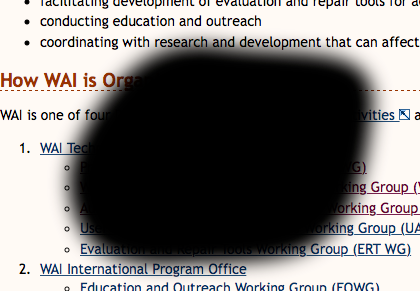
Fig. 1중앙 필드 손실의 예
Fig. 1Example of central field loss
Fig. 2주변 필드 손실의 예
Fig. 2Example of peripheral field loss
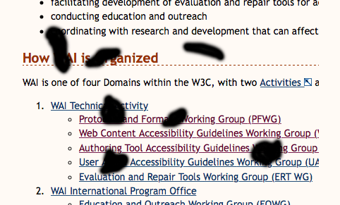
Fig. 3다른 필드 손실의 예
Fig. 3Example of other field loss
시야에 관련된 사용자 요구는 다음 섹션들에서 다루어 집니다:
User needs related to field of vision are addressed in the following sections:
2.2 추적 - 한 방향 스크롤링을 위한 재포장, 단일 컬럼으로의 리플로우, 유연한 텍스트 영역, 줄 길이, 자리맞춤, 하이픈 연결
어떤 사람들은 보통 색상 인지에 대해 책임지고 있는 눈의 콘 수용체에서 결손의 이유로 분명한 색상을 잘 혹은 전혀 볼 수 없습니다.
색맹인 대부분 사람들이 대부분의 색상들을 볼 수 있을지라도, 이것이 보통 “색맹”이라 불립니다.
어떤 색을 전혀 볼 수 없는 사람은 드뭅니다.
세계적으로, 거의 12명 중 1명의 남자(8%)와 200명 중 1명의 여자가 색상 시력 결손을 가집니다. [초안 메모: 추가되어야 할 참조; 일부는 참조에 언급됩니다.]
색상 시력 결손은 많은 상황에서 “저시력”이나 장애로 분류되지 않습니다.
Some people cannot see certain colors well or at all, usually because of deficiencies in the cone receptors of their eyes which are responsible for color perception. This is commonly called “color blindness”, even though most people who are color blind can see most colors. It is rare that a person cannot see any color at all. Globally, approximately 1 in 12 men (8%) and 1 in 200 women have color vision deficiencies. [Draft Note: Reference to be added; some listed in References.] Color vision deficiencies are not classified as “low vision” or disabilities in many contexts.
색맹의 가상 예:
Simulated examples of color blindness:
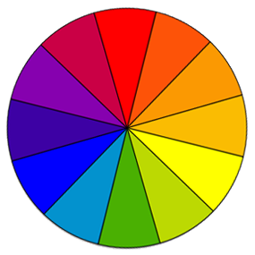
Fig. 4전체 색상 인식
Fig. 4Full color perception
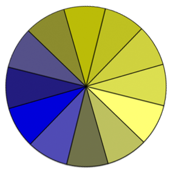
Fig. 5적록 색맹
Fig. 5Red-green color blindness
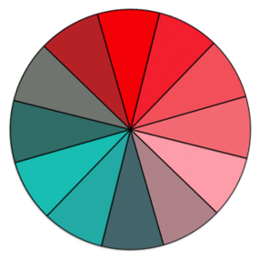
Fig. 6황청 색맹
Fig. 6Blue-yellow color blindness
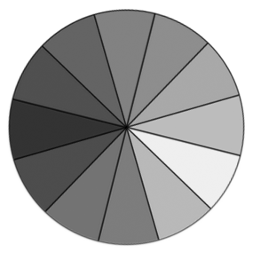
Fig. 7전색맹 (희귀)
Fig. 7No color perception (rare)
색맹에 관련된 사용자 요구는 다음 섹션에서 다루어집니다:
User needs related to color blindness are addressed in the following section:
저시력 대부분 사람은 여러 시각 장애를 가집니다.
예를 들어, 황반변성을 가진 사람은 일반적으로 중앙 필드 손실(“사각 지대”), 약한 시력, 낮은 명암 민감도, 높은 빛 민감도로 발전됩니다.
다른 요인들은 — 염증, 약물, 피로, 환경, 작업 같은 — 주어진 상황에서 사람의 실질적인 시력에 영향을 줍니다.
Most people with low vision have multiple visual impairments. For example, people with macular degeneration usually develop central field loss (“blind spots”), poor visual acuity, low contrast sensitivity, and high light sensitivity. Other factors — such as inflammation, medication, fatigue, environment, and task — influence a person’s effective vision in a given situation.
피로는 저시력을 가진 많은 사람들에 대해, 특히 그들의 시각 상황에 대해 최적의 방법으로 보여지지 않은 텍스트를 읽을 때 중요한 이슈입니다.
일반적으로, 더 많은 사람들이 읽기 위해 안간힘을 써야하고, 최악의 시각 피로도가 될 것입니다.
어떤 사람들은 짧은 시간 동안만 읽을 수 있고 그 후 휴식이 필요합니다.
Fatigue is a significant issue for many people with low vision, particularly when they read text that is not displayed in an optimum way for their visual situation. Generally, the more a person needs to strain to read, the worse their visual fatigue will become. Some people can read for only a short time and then they need a break.
환경적 요인들은 포함합니다:
Environmental factors include:
기기의 선명도, 예를 들어, 인치당 도트 수(dpi)
기기의 밝기
조명
눈부심
거리와 각도
이동, 예를 들어, 기차에서 독서
Clarity of the device, for example, dots-per-inch (dpi)
Brightness of the device
Lighting
Glare
Distance and angle
Movement, for example, reading on a train
종종 사람들은 환경적 요인을 제어합니다. 예를 들어, 방에 조명을 변경하거나, 기기의 밝기를 설정하거나, 그늘진 장소로 이동하거나, 기기의 각도를 변경할 수 있습니다.
종종 사람들은 환경을 조금 제어하거나 제어하지 못합니다. 예를 들어, 공공 키오스크를 사용하는 경우.
Sometimes people have control over environmental factors, for example, they can change the lighting in the room, set the brightness of the device, move to a shaded location, or change the angle of the display. Sometimes people have little or no control over the environment, for example, when using a public kiosk.
[초안 메모 : 태스트 포스는 이 단락의 콘텐트를 변경할 계획입니다.]
작업은 또한 사람의 기능적 시각에 영향을 줄 수 있습니다.
예를 들어, 사람은 한 번에 한 글자만을 읽는 시력 검사에 주어진 포인트 크기로 문자를 구별할 수 있지만, 실제로는 동일한 포인트의 크기로 텍스트 블럭을 읽을 수 없습니다.
이것은 식별성와 가독성 사이의 차이입니다.
식별성은 문자를 구별하는 것에 의해 텍스트를 인식하는 것과 관련됩니다.
가독성는 텍스트 정보를 읽고 이해하는 것과 관련됩니다.
따라서 텍스트는 사람에게 어느 정도 읽을 수 있는 것이 될 수 있지만, 기능적으로 읽을 수는 없는—사용자가 다른 것으로부터 한 문자를 구별할 수 있지만 문장을 효과적으로 읽을 수 없는 것과 함께— 것이 될 수 있습니다.
[Draft Note: The Task Force plans to change the content of this paragraph.] Tasks may also impact a person’s functional vision. For example, a person may be able to distinguish letters at a given point size on a vision test where they are reading only one letter at a time, but they cannot actually read blocks of text at that same point size. This is the difference between legibility and readability. Legibility is related to perceiving text by distinguishing letters. Readability is related to reading and comprehending textual information. Thus text could be somewhat legible to a person, yet not functionally readable—with effort that user could distinguish one letter from another, but could not effectively read sentences.
일부 저시력 접근성 이슈는 직접적으로 기능적 시각과 관련되고 일부는 시각 장애인에 대한 대응과 관련됩니다.
예를 들어, 저시력(과 시각 전체 필드)을 가진 사람이 줌 또는 배율을 사용하는 경우, 그들은 주변 필드 손실을 가진 사람과 유사한 어떤 이슈를 가집니다 — 시력을 교정하기 위한 그들의 해결책의 결과로 많은 정보가 시야 밖으로 옮겨지기 때문에.
Some low vision accessibility issues are directly related to functional vision and some are related to adaptations for visual impairments. For example, when a person with low visual acuity (and full field of vision) uses zoom or magnification, they have some similar issues as people with peripheral field loss — as considerable information may be moved outside of their field of vision as a result of their solution to reduced visual acuity.
3. 사용자 요구
저시력을 가진 사람들에 가지각색으로 넓게 걸친 사용자 요구와 한 사용자의 요구는 다른 사용자의 여구와 충돌할 수 있습니다.
예를 들어, 노인은 높은 명암을 요구할 수 있지만 그것은 빛 민감도를 가진 사람에게는 읽히지 않게 할 수 있습니다; 좋은 시력(선명도)과 터널 비전을 가진 사람은 텍스트 크기를 작게 만들어야 하고 그래서 그들은 더 나은 읽기를 위해 한 번에 더 많은 단어를 볼 수 있지만, 저시력을 가진 대다수 사람들은 큰 텍스트를 요구합니다.
User needs varying widely across people who have low vision, and one user’s needs may conflict with another user’s needs. For example, an older person might need high contrast but that might be unreadable to a person with light sensitivity; a person with good visual acuity (clarity) and tunnel vision might need to make the text size small so they can see more words at a time to read better, whereas most people with low visual acuity need large text.
이슈 3
태스크 포스는 이 섹션을 확장 할 계획입니다.
The Task Force plans to expand this section.
한 사람의 요구에 대해 매일 매일 혹은 하루 내내 다르게 되어야 하는 것은 희귀하지 않습니다;
예를 들어, 그들은 더 피곤해지거나, 큰 텍스트나 다른 배경색을 요구 할 수 있습니다.
작업과 정보의 양은 사용자 요구에 영향을 줍니다.
예를 들어, 사람이 이메일을 작성하고 있는 경우, 그들이 작성되고 있는 것을 알고 있고 오타에 대해 걷어내고 있을 뿐이기 때문에 작은 글씨를 가질 수 있습니다; 반면 동일한 사람이 이메일을 읽고 있는 경우, 그들은 콘텐트를 이미 알고 있지 않기 때문에 큰 글자를 요구합니다.
It is not uncommon for one person’s needs to be different from day-to-day or even throughout one day; for example, when they are more fatigued, they might need larger text or a different background color. Task and the amount of information influences user needs. For example, when a person is typing an e-mail, they may be able to have smaller font because they know what is being written and are just skimming for typos; whereas when that same person is reading an e-mail, they need larger font because they do not already know the content.
따라서 사용자는 그들의 요구를 충족시키기 위한 유저 인터페이스를 조절 할 수 있을 필요가 있습니다.
가독성을 위한 개인의 최적의 디스플레이는 종종 매우 분명한 대응을 요구합니다.
예를 들어, 높은 빛 민감도와 낮은 명도 민감도를 가진 사람은 배경과 밝지 않고 텍스트를 식별하기 위해 충분한 명암을 제공하는 텍스트 색상들을 설정해야 할 필요가 있습니다.
Thus users need to be able to adjust user interfaces to meet their needs. An individual's optimum display for readability often requires very specific adaptations. For example, a person with high light sensitivity and low contrast sensitivity needs to set background and text colors that are not bright and that provide sufficient contrast for them to discern the text.
더 많이 혹은 더 적게 구별할 수 있고 읽기 쉽게 만드는 텍스트의 특징은 매우 상호 관계가 있습니다;
그것은, 한 특징은 다른 특징에 의존됩니다.
예를 들어, 낮은 명암 민감도를 가진 사람은 5:1의 명암비를 가진 작은 텍스트를 읽지 못할 수 있지만, 다음 텍스트가 더 큰 경우에 그 비율에서 텍스트를 읽을 수 있습니다; 마찬가지로, 어떤 글꼴에서 사람은 자간을 증가시킬 필요가 없지만, 다른 글꼴에서는 그렇지 않습니다.
The characteristics of text that make it more or less legible and readable are highly inter-related; that is, one characteristic is dependent on other characteristics. For example, a person with low contrast sensitivity might not be able to read small text with a contrast ratio of 5:1, but can read text at that ratio when then text is much larger; similarly, with some fonts a person does not need to increase the letter spacing, but with other fonts they do.
사용자는 아래 카테고리에 의해 그루핑 되는 것이 필요하지만, 아직 일부 양상은 다른 카테고리에 연관되지 않습니다.
이 섹션은 사용자 요구를 설명합니다:
The user needs below are grouped by categories, yet some aspects relate to different categories. This section explains user needs for:
Additional User Needs will be added related to contrast and image accessibility.
각각의 섹션은 이슈와 사용자 경험을 간단히 설명하고, "사용자 요구 - " 이후에 특정 사용자 요구를 서술합니다.
“사용자는 ... 수 있습니다”라고 말하는 사용자 요구는 사용자가 설정을 변경할 수 있다는 것을 나타냅니다.
Each section briefly explains the issue and the user experience, and then states a specific user need after "User Need - ". User Needs that say “Users can...” indicate that users can change a setting.
3.1 밝기와 색상
밝기는 휘도와 광도에 관련됩니다. [초안 메모: 태스크 포스는 이 토픽에 추가적인 정보를 연결할 계획입니다.]
이 문서는 간결함을 위해 "밝기"를 사용합니다.
Brightness relates to luminance and luminosity. [Draft Note: The Task Force plans to link to additional information on this topic.] This document uses "brightness" for simplicity.
3.1.1 전체 밝기
스크린이나 다른 소스의 밝은 빛은 어떤 저시력자(광선기피증을 가진 사람 난독증 같은 독서 장애를 가진 사람을 포함하여)가 읽는 것을 방해하고 어떤 사람들의 경우 고통을 유발합니다.
어떤 사람들은 그들의 스크린의 밝기를 줄이거나 오버레이를 사용합니다.
Bright light from a screen or other sources prevents some people with low vision (including those with photophobia and with reading disabilities such as dyslexia) from reading and causes pain for some people. Some people turn down the brightness of their screen or use an overlay.
사용자 요구 - 밝기:
사용자는 디스플레이의 전체 밝기를 설정할 수 있습니다.
Users can set the overall brightness of a display.
3.1.2 텍스트 명암
빛 민감도 섹션에 언급된 바와 같이, 어떤 사람들은 특별히 배경에 대해, 낮은 밝기가 필요합니다.
배경에 대해 낮은 밝기가 요구되는 어떤 사람들은 또한 낮은 전체 밝기가 필요하고 따라서 낮은 밝기의 텍스트가 필요합니다.
As mentioned in the Light Sensitivity section, some people need low brightness, especially for backgrounds. Some people who need low brightness for backgrounds also need low brightness overall and thus need low brightness text.
노화로부터 명도 민감도를 잃은 많은 노인들을 포함하여, 다른 사람들은 텍스트와 배경 사이에 높은 대비가 필요합니다.
일부는 밝은 배경에 어두운 텍스트를 더 잘 읽습니다.
Other people need high contrast between text and background, including many older people who lose contrast sensitivity from ageing. Some read better with dark text on light background.
어떤 사람들의 경우, 보통 색상 조합이나 제한된 색상 팔레트로부터의 색상은 잘 됩니다. 예를 들어, 흰 배경에 검은 텍스트 혹은 검은 배경에 흰 글씨를 가진 반대.
다른 사람들은 좀 더 특정한 배경과 텍스트 색상을 선택하는 것이 필요합니다.
예를 들어, 전체적으로 낮은 밝기가 필요한 사람들은 그들에게 여전히 너무 높은 밝기가 아닌 충분한 대비를 제공하는 특정한 배경과 텍스트 색상을 선택할 필요가 있습니다.
읽을 수 있고 최적의 색상 조합은 개인들 사이에서 엄청나게 다르고 한 개인에 대해서 조차 피로와 조명 같은 조건에 따라 다를 수 있습니다.
For some people, common color combinations or colors from a limited color palette work fine, for example, black text on white background or the inverse with white text on black background. Other people need to select more specific background and text colors. For example, people who need low brightness overall, need to select the specific background and text colors that provide sufficient contrast for them yet not too high brightness. Readable and optimal color combinations differs vastly among individuals and can even vary for one individual depending on conditions such as fatigue and lighting.
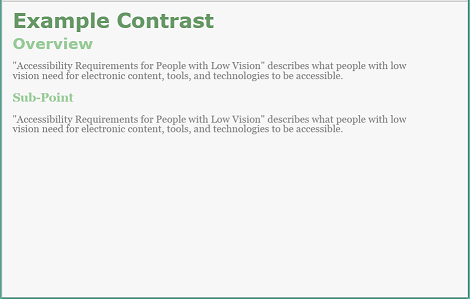
Fig. 8낮은 대비로 저자-정의된 색상을 가진 웹 페이지 - 밝은 배경, 회색 텍스트, 밝은 녹색 제목
Fig. 8Web page with author-defined colors with low contrast - light background, gray text, light green headings
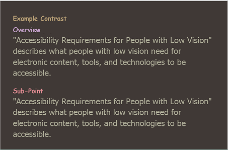
Fig. 9중간 대비 사용자 스타일을 가진 웹 페이지 - 갈색 배경, 황갈색 텍스트, 다른 칙칙한 색상의 제목
Fig. 9Web page with user style with medium contrast - brown background, tan text, headings of different dull colors
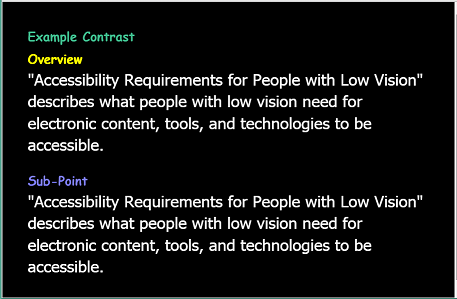
Fig. 10높은 대비 사용자 스타일을 가진 웹 페이지 - 검정 배경, 흰색 텍스트, 다른 밝은 색상의 제목
Fig. 10Web page with user style with high contrast - black background, white text, headings of different bright colors
사용자 요구 - 명암:
사용자는 전체 색상 범위에서 배경 색상과 텍스트 컬러를 설정할 수 있습니다.
Users can set the background color and the text color from the full color spectrum.
3.1.3 색상에 의존하지 않는 것
어떤 사람들은 색상을 구별할 수 없습니다... [초안 메모: 태스크 포스는 여기에 추가적인 정보를 추가할 계획입니다.]
Some people cannot distinguish colors... [Draft Note: The Task Force plans to add additional information here.]
사용자 요구 - 색상:
색상은 단지 정보를 전달하거나, 동작을 나타내거나, 응답을 유도하거나, 시각적 요소를 구별하는 시각적인 수단이 아닙니다.
Color is not the only visual means of conveying information, indicating an action, prompting a response, or distinguishing a visual element.
3.2 추적
추적은, 한 라인의 끝에서부터 텍스트의 다름 행의 시작까지 얻는 것을 포함하여, 텍스트의 라인을 따라 쫓아가는 것입니다.
Tracking is following along lines of text, including getting from the end of one line to the beginning of the next line of text.
이 섹션은 재포장, 리플로우, 줄 길이, 하이픈 연결을 포함합니다.
추적은 또한, 특히 텍스트 블럭이 컬럼에 있거나 다른 텍스트 근처에 있을 경우, 줄 간격, 자리맞춤, 여백과 테두리에 의해 영향을 받습니다.
This section includes rewrap, reflow, line length, and hyphenation. Tracking is also impacted by leading, justification, and margins and borders, especially when blocks of text are in columns or near other text.
3.2.1 한 방향 스크롤링을 위한 재포장
장애가 있는 많은 사람들과 장애가 없는 많은 사람들의 경우, 텍스트의 라인을 읽기 위해 앞 뒤로 스크롤 해야 할 때 읽는 것이 어렵습니다.
저시력자들이 텍스트 크기를 증가시키고 텍스트가 "리플로우"하지 않는 경우, 그들은 때때로 텍스트의 단일 라인을 읽기 위해 스크린을 수평으로 여러 번 스크롤 해야 합니다.
게다가, 스크롤 바와 커서가 일부 찾기 어렵습니다.
텍스트의 라인 끝에서 가져오는 것, 왼쪽으로 다시 스크롤링 하는 것, 그 후 다음 라인의 시작을 찾아 얻는 것은 상당한 주의를 취할 수 있습니다.
이것은 읽는 흐름과 이해를 떨어뜨리고, 가로 스크롤링이 요구되는 경우 때때로 효과적인 읽기가 불가능 하기가 상당히 충분합니다.
For many people, with and without disabilities, it is difficult to read when they have to scroll back and forth to read a line of text. When people with low vision increase the text size and the text doesn't “reflow”, they sometimes have to scroll horizontally several screens to read a single line of text. Additionally, the scrollbar and cursor is harder to find for some. Getting from the end of a line of text, scrolling back left, and then finding the beginning of the next line can take considerable attention. This degrades reading flow and comprehension, sometimes significantly enough that effective reading is not possible when horizontal scrolling is required.
사용자 요구 - 재포장:
스크롤링의 한 방향만 요구되기 위해, 예를 들어 왼쪽에서 오른쪽 그리고 오른쪽에서 왼쪽 스크립트(언어)에 대해, 텍스트 블럭은 보통 수직 스크롤링을 재포장하고 가로 스크롤링은 하지 않습니다.
Blocks of text rewrap so that only one direction of scrolling is needed, e.g., for left-right and right-left scripts (languages), usually vertical scrolling and not horizontal scrolling.
이슈 5
스크립트 방향: 위의 재포장과 아래 리플로우는 간결함을 위해 현재로는 왼쪽에서 오른쪽 그리고 오른쪽에서 왼쪽 스크립트로 작성됩니다. 우리는 그것을 적절하게 위에서 아래 스크립트에 또한 수직으로 적용하는 것이 일반적이도록 편집할 것입니다 — 우리가 그것을 너무 복잡하게 만드는 것 없이 할 수 있거나, 혹은 예로만 그것을 변경한다면. 스크립트 vs. 언어 참조는 “언어는 방향을 가지지 않습니다. 스크립트는 쓰기 방향을 가집니다”라고 말합니다.
Script direction: Rewrap above and Reflow below are written for left-right and right-left scripts for now for simplicity. We'll edit it to make it generic to apply also vertically to top-to-bottom scripts as appropriate — if we can without complicating it too much, or change it to example only. script vs. language reference says “Languages don't have a direction. Scripts have a writing direction”.
3.2.2 단일 컬럼으로의 리플로우
장애가 있는 많은 사람들과 장애가 없는 많은 사람들의 경우, 텍스트의 컬럼의 바닥으로부터 다른 컬럼의 맨 위로 스크롤 해야 할 때 읽는 것이 더 어렵습니다.
여러 컬럼을 보는 일부 저시력자의 경우, 한 컬럼의 바닥에서 다음 컬럼의 맨 위를 얻기 위해 여러 번 스크린을 위로 스크롤 해야 합니다.
게다가, 스크롤 바와 커서가 일부 찾기 어렵습니다.
컬럼의 바닥으로부터 얻는 것과 다음 컬럼의 맨 위를 찾는 것은 상당한 주의를 취할 수 있습니다.
이것은, 때때로 상당히, 읽는 흐름과 이해를 떨어뜨립니다.
For many people, with and without disabilities, it is more difficult to read when they have to scroll from the bottom of a column of text to the top of another column. For some people with low vision, with multiple columns, they have to scroll up several screens to get from the bottom of one column to the top of the next. Additionally, the scrollbar and cursor is harder to find for some. Getting from the bottom of a column and finding the top of the next column can take considerable attention. This degrades reading flow and comprehension, sometimes significantly.
사용자 요구 - 리플로우:
사용자는 여러 컬럼 대신 하나의 연결된 블럭 내에 텍스트 블럭을 설정할 수 있습니다.
Users can set blocks of text in one continuous block, instead of in multiple columns.
3.2.3 줄 길이
장애가 있는 많은 사람들과 장애가 없는 많은 사람들의 경우, 텍스트의 짧은 줄보다 매우 긴 줄이 읽기 더 어렵습니다.
작은 시야를 가진 사람들의 경우, 텍스트의 긴 줄이 읽기 더 어려게 될 수 있을 뿐 아니라, 텍스트의 줄 끝에서 다음 줄의 처음을 찾는 것 역시 어렵게 될 수 있습니다.
For many people, with and without disabilities, it is harder to read very long lines of text than shorter lines. For people with a small field of vision, it can be even more difficult to read long lines of text, and from the end of a line of text, to find the beginning of the next line.
좋은 시력을 가지고 있지만 시야가 여전히 작은 사람들은 텍스트 크기를 작게 설정하고 텍스트 영역을 좁게 설정해서 그들의 시야에 더 많은 문자들을 얻을 수 있게 되기를 원할 수 있습니다.
People with good visual acuity yet small field of vision might want to set the text size small and the text area narrow so they can get more characters in their field of vision.
사용자 요구 - 줄 길이:
사용자는 텍스트 블럭의 줄 길이를 설정할 수 있습니다.
종종 이를 수행하는 가장 쉬운 방법은 (개발자, 디자이너, 사용자의 경우) 사용자로 하여금 텍스트 영역의 크기를 조정하게 하는 것과 줄 길이를 변경하기 위해 텍스트를 재포장하는 것입니다.
Users can set the line length for blocks of text. Often the easiest way to do this (for developers, designers, and users) is for users to resize text areas and the text rewraps to change the line length.
3.2.4 하이픈 연결
어떤 사람들의 경우 하이픈으로 연결된 단어를 이해하는 것이 특히 어렵고, 그들은 하이픈 연결을 해제해야 할 필요가 있습니다.
주로 이슈는 인지 장애가 있는 사람들의 경우이지만, 텍스트 크키가 증가될때 하이픈 연결은 이상의 이슈가 되므로, 따라서 또한 저시력과도 관련이 있습니다.
매우 큰 텍스트를 보는 어떤 사람들은 텍스트 라인에 더 많은 문자가 끼워지도록 하이픈 연결을 선호 할 수 있습니다.
For some people it is especially difficult to understand words that are hyphenated, and they need to turn off hyphenation. While primarily an issue for people with cognitive impairments, hyphenation becomes more of an issue when text size is increased, thus it is also related to low vision. Some people with very large text may prefer hyphenation on so that more characters fit on a line of text.
사용자 요구 - 하이픈 연결:
사용자는 하이픈 연결을 켜거나 끌 수 있습니다.
Users can turn hyphenation on or off.
3.3 인식
인식은 그 특성에 기반하여 개별 문자를 알아볼 수 있는 것, 식별성과, 비 텍스트 정보와 인터페이스 요소를 포함합니다.
Perceiving includes being able to recognize individual letters based on their characteristics, which is legibility, and non-text information and interface elements.
이 섹션은 텍스트 크기, 폰트, 스타일, 대문자 사용, 모든 요소들의 크기를 포함합니다.
간격 또한 문자를 알아볼 수 있게 하는 것을 어떻게 어렵게 만드는지에 영향을 줍니다.
This section includes text size, font, style, capitalization, and size of all elements. Spacing also impacts how hard it is to perceive letters.
3.3.1 텍스트 크기
어떤 사람들은 문자를 인식하기 위하여 큰 텍스트가 필요합니다.
크기를 증가시키는 것이 가장 일반적이기는 하지만, 터널 비전과 좋은 시력을 가진 어떤 사람들은 한 번에 많은 단어들을 볼 수 있도록 더 작은 글자를 선호할 수도 있습니다.
Some people need larger text in order to perceive letters. Although increasing size is most common, some people with tunnel vision and good visual acuity may prefer smaller letters so they can see more words at a time.
이슈들 예:
Example issues:
텍스트 설정이 툴팁 텍스트와 다른 팝업 텍스트에서 텍스트를 증가시키지 않습니다.
텍스트 설정이 이미지 내 텍스트를 증가시키지 않습니다.
텍스트 설정이 지도 내 텍스트를 증가시키지 않습니다.
Text settings don't increase the text in tool-tip text and other pop-up text
Text settings don't increase the text in images
Text settings don't increase the text in maps
사용자 요구 - 텍스트 크기:
사용자는 전체 인터페이스의 확대 축소 없이, 모든 텍스트의 텍스트 크기(폰트 크기)를 변경할 수 있다.
Users can change the text size (font size) of all text, without zooming the entire interface.
3.3.2 폰트
어떤 폰트/활자체는 다른 것들보다 더 읽기 쉽습니다.
예를 들어, 어떤 사람들은 서브 픽셀 렌더링 폰트를 읽을 수 없습니다.
Some fonts/typefaces are more readable than others. For example, some people cannot read fonts with sub-pixel rendering.
툴 개발자를 위한 메모: 사용자가 선택할 폰트의 리스트를 제공하는 경우, 폰트 자체에 폰트 이름 — 예를 들어, Times, Veranda, Courier — 을 제시하여 사용자가 각 폰트를 선택하기 전에 어떻게 보이는지를 알릴 수 있습니다.
Note to tool developers: When providing users a list of fonts to choose from, present the font name in the font itself — e.g., Times, Veranda, Courier — so users can tell what each font looks like before choosing it.
사용자 요구 - 폰트:
사용자는 세리프와 산세리프 폰트를 포함하여 폰트의 넓은 범위에서 선택하여, 모든 텍스트의 font face(font family나 typeface로도 불립니다)을 변경할 수 있습니다.
Users can change the font face (also called font family or typeface) of all text, choosing from a wide range of fonts including serif and sans serif fonts.
3.3.3 스타일
어떤 사람들의 경우, 굵은 텍스트는 읽기 더 쉽습니다.
어떤 사람들의 경우, 모든 밑줄이 그어지거나 기울여진 텍스트 블럭을 읽는 것이 어렵습니다.
For some people, bold text is easier to read. For some people, it is difficult to read blocks of text that is all underlined or italicized.
사용자 요구 - 스타일:
사용자는 텍스트 블럭의 텍스트 스타일(밑줄, 기울임, 굵게)을 변경할 수 있습니다.
Users can change the text style (underline, italic, bold) of blocks of text.
3.3.4 대문자 사용
모두 대문자로 된 텍스트는 장애가 있는 대부분의 사람들과 장애가 없는 대부분의 사람들의 경우 읽는 것이 더 어렵습니다.
Text in all capital letters is more difficult to read for most people, with and without disabilities.
사용자 요구 - 대문자 사용:
사용자는 텍스트 블럭의 대문자 사용(모든 대문자, 작은 대문자, 문장 스타일)를 변경할 수 있습니다.
Users can change the capitalization (all capital letters, small capital letters, sentence style) of blocks of text.
3.3.5 모든 요소의 크기
어떤 사람들은 정보를 인식하기 위하여 모든 인터페이스 요소들의 크기를 증가시킬 필요가 있습니다.
크기를 증가시키는 것이 가장 일반적이기는 하지만, 터널 비전과 좋은 시력을 가진 어떤 사람들은 한 번에 많은 정보를 볼 수 있도록 감소시키는 것을 선호할 수도 있습니다.
예를 들어, 사용자가 필요 한 것:
Some people need to increase the size of all interface elements in order to perceive information. Although increasing size is most common, some people with tunnel vision and good visual acuity may prefer to decrease the size so they can see more information at a time. For example, users need to:
모든 것을 크게 만들기 위해 확대.
일반적으로 운영체제 수준에서 수행되는, 텍스트 커서의 너비를 증가.
일반적으로 운영체제 수준에서 수행되는, 마우스 포인터의 크기를 증가.
Zoom to make everything larger.
Increase the width of the text cursor, which is usually done at the operating system level.
Increase the size of the mouse pointer, which is usually done at the operating system level.
사용자 요구 - 크기:
사용자는 모든 요소들의 크기를 변경 할 수 있습니다.
Users can change the size of all elements.
3.4 읽기를 위한 간격
라인 사이의 공간과 단어 사이의 공간 같은 간격은 가독성에 영향을 줍니다.
Spacing such as space between lines and space between words impacts readability.
이 섹션은 줄 간격, 자간, 띄어쓰기, 자리맞춤, 여백과 테두리, 요소간 간격을 포함합니다.
This section includes leading, letter spacing, word spacing, justification, margins and borders, and spacing between elements.
3.4.1 줄 간격
줄 간격은 텍스트 블럭 내 라인 사이의 공간입니다.
이것은 line spacing과 line height로도 불립니다.
어떤 사람들은 텍스트를 읽을 수 있도록 라인 사이의 더 많은 공백이 필요합니다.
줄 간격은 또한 추적을 돕습니다.
Leading is the space between lines in a block of text. It is also called line spacing and line height. Some people need more space between lines to be able to read text. Leading also helps with tracking.
사용자 요구 - 줄간격:
사용자는 텍스트 블럭의 줄간격(line spacing, line height)을 변경할 수 있습니다.
Users can change the leading (line spacing, line height) of blocks of text.
3.4.2 자간
어떤 사람들을 텍스트를 읽기 위해 글자 사이의 더 많은 공백이 필요합니다.
Some people need more space between letters to read text.
사용자 요구 - 자간:
사용자는 텍스트 블럭의 자간(글자/부호 사이 공백)을 변경 할 수 있습니다.
Users can change the letter spacing (space between letters/characters) of blocks of text.
3.4.3 띄어쓰기
어떤 사람들은 텍스트를 읽기 위해 단어들 사이에 더 많은 공백이 필요합니다.
Some people need more space between words to read text.
사용자 요구 - 띄어 쓰기:
사용자는 텍스트 블럭의 띄어 쓰기(단어들 사이의 공백)을 변경 할 수 있습니다.
Users can change the word spacing (space between words) of blocks of text.
3.4.4 자리맞춤
자리맞춤이나 정렬 옵션들은 보통 다음을 포함합니다 : 왼쪽, 오른쪽, 양쪽, 가운데.
Justification or alignment options usually include: left, right, full/both, centered.
자리맞춤은 가독성과 추적에 영향을 줍니다.
때로는 양쪽 자리 맞춤은 단어 사이에 필요 이상의 공백이 “rivers of white”를 텍스트의 라인을 따라 추적하기 어렵게 만드는 것을 야기하거나, 단어 사이의 작은 공백이 독립된 단어를 구별하는 것을 어렵게 만드는 것을 야기하기 때문에 읽는 것을 더 어렵게 만듭니다.
어떤 사람들은 양쪽 맞춤으로 한 라인의 끝에서 다음을 추적하는 것이 더 쉽다는 것을 발견하고, 다른 누군가는 왼쪽 자리맞춤(왼쪽에서 오른쪽 스크립트의 경우)을 선호합니다. [초안 메모: 테스크 포스는 “river”나 “river of white”에 대한 정의 용어 사전을 추가할 계획입니다. 현재로는, 여기 설명과 예가 있습니다. : River (typography).]
Justification impacts readability and tracking. Sometimes full justification makes reading more difficult because extra space between words causes “rivers of white” making it difficult to track along a line of text, or less space between words makes it difficult to distinguish separate words. Some people find it easier to track from the end of one line to the next with full justification, and others prefer left justification (for left-to-right scripts). [Draft Note: The Task Force plans to add a glossary definition for “river” or “river of white”. For now, here's an explanation and example: River (typography).]
사용자 요구 - 자리맞춤:
사용자는 텍스트 블럭의 자리맞춤 / 정렬(왼쪽, 오른쪽, 양쪽, 가운데)를 변경할 수 있습니다.
Users can change the justification / alignment (left, right, full/both, centered) of blocks of text.
3.4.5 여백과 테두리
텍스트가 모서리에 가깝다면, 어떤 사람들에게 문자를 구별하는 것이 어렵고 가독성에 부정적인 영향을 줍니다.
텍스트 블럭 주변으로 넓은 여백을 가지는 것은 어떤 사람들이 텍스트에 초점을 두는 것을 돕고 주변 텍스트, 이미지, 기타 등등에 의해 산만해지지 않습니다.
이것은 특히 텍스트 블럭이 컬럼 내에나 다른 텍스트 가까이에 있을 경우 탐색에 대해 중요합니다.
If text is close to edges, it is hard for some people to distinguish letters and it negatively impacts readability. Having wide margins around blocks of text helps some people focus on the text and not get distracted by surround text, images, etc. This is especially important for tracking when blocks of text are in columns or near other text.
매우 큰 텍스트가 필요한 사람의 경우, 넓은 여백은 라인 길이를 매우 짧게 만들 수 있습니다.
터널 비전이 있는 사람의 경우, 넓은 여백은 텍스트를 추적하는 것을 어렵게 만들 수 있습니다.
그러므로, 어떤 사람들은 텍스트 블럭을 구분짓기 위해 여백 대신 혹은 여백에 추가로 테두리가 필요할 것입니다.
For people who need very large text, wide margins could make line length too short. For people with tunnel vision, wide margins could make it hard to track text. Therefore, some people might need borders to separate blocks of text instead of, or in addition to, margins.
사용자 요구 - 여백과 테두리:
사용자는 텍스트 블럭 주변에 여백(빈 공간)과 테두리 — 선 색, 두께, 스타일을 포함하여 — 를 변경할 수 있습니다.
Users can change the margins (blank space) and borders — including line color, width, style — around blocks of text.
3.4.6 요소 사이 간격
관련 없는 요소들 사이에 공간을 추가적인 공간을 가지는 것은 사람들이 관련된 정보를 분류하는 것을 돕습니다.
예를 들어, 제목 위와 그 아래 적은 공간에 더 많은 공간을 가지는 것은, 아래의 텍스트와 제목을 연관짓는 것을 돕습니다.
Having additional space between unrelated elements helps people group related information. For example, having more space above a heading and less space below it, helps associate the heading with the text below.
[초안 메모: 추가될 가능성이 있는 삽화 : 제목 이전과 이후 공백 vs. 제목 위 더 많은 공간과 그 아래 적은 공간과 동일한 예.]
[Draft Note: Possible figures to be added: examples equal space before & after headings vs. more space above a heading and less space below it.]
사용자 요구 - 요소 사이 간격:
간격은 연관된 요소를 분류하고 적게 연관된 요소를 구분짓습니다.
Spacing groups related elements and separates less related elements.
3.5 요소 식별
요소를 식별하는 것은 제목과 목록같은 요소들을 구별하는 것에 관한 것입니다.
Identifying elements is about distinguishing elements such as headings and lists.
3.5.1 요소 수준 맞춤화
어떤 사람들은 제목 같은 텍스트의 유형을 구별하기 쉽도록 만들기 위해 특정한 요소가 표시되는 방식을 변경합니다.
모든 텍스트가 비례적으로 증가된다면, 제목은 사람들이 본문 텍스트를 읽기에 필요한 것보다 매우 크고 거대하게 될 수 있습니다.
그래서 어떤 사람들은 제목에 대해 더 작게 하고 폰트, 색상 같은 스타일링을 사용하는 것과, 제목 수준을 구별하기 위한 들여쓰기를 선호합니다.
Some people change the way certain elements are displayed to make it easier to distinguish types of text, such as headings. If all text is increased proportionally, headings can become very large and bigger than people need to read the main body text. So some people prefer for headings to be smaller and they use styling such as font, color, and indentation to distinguish heading levels.
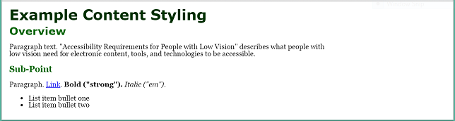
Fig. 11저자 스타일 웹 페이지
Fig. 11Web page with author style
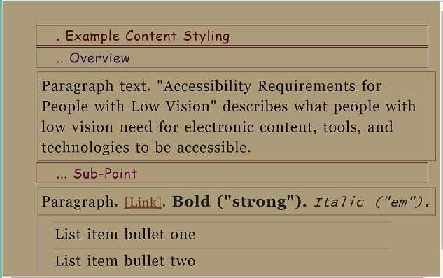
Fig. 12사용자 스타일 웹 페이지 - 제목 수준을 구별하기 위해 다른 폰트, 들여쓰기, 테두리, 다른 색상, 텍스트 앞의 점으로
Fig. 12Web page with user style - with different fonts, indentation, borders, different colors, and dots preceding text to differentiate heading levels
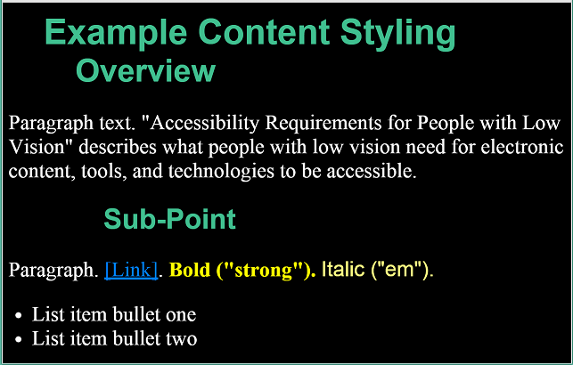
Fig. 13사용자 스타일 웹 페이지 - 제목 수준을 구별하기 위해 다른 폰트, 들여쓰기, 색상으로
Fig. 13Web page with user style - with different fonts, indentation, and colors to differentiate heading levels
이슈 6
태스트 포스는 이 섹션에 추가적인 이미지 설명을 제공할 수 있습니다 - 삽화 내 사용자 맞춤의 글머릭기호가 붙은 목록을 포함하여.
The Task Force may provide additional image descriptions in this section - including a bulleted list of the user customization in the figures.
사용자 요구 - 요소 수준 맞춤화:
사용자는 헤딩, 목록, 문단 텍스트와 같은 특정한 요소에 대해 텍스트를 다르게 맞춤화 할 수 있습니다.
Users can customize text differently for specific elements, such as headings, lists, and paragraph text.
사용자는 적어도 설정할 수 있습니다:
Users can set at least:
텍스트 크기
텍스트 색상과 배경 색상
폰트
텍스트 스타일(밑줄, 기울임, 굵게를 켜거나 끄는 것)
줄 간격
여백
테두리 — 선 색상, 두께, 스타일을 포함하여
Text size
Text color and background color
Font
Text style (that is, turn on or off underline, italic, bold)
Leading
Margins
Borders — including border line color, width, style
3.6 응시점과 근접
응시점은 사용자가 보고 있는 영역입니다.
[초안 메모: 더 많은 정보가 사용가능합니다: UAAG 2 용어사전과 IndieUI 위키. 태스트 포스는 아마 이 문서에 정의 용어 사전을 추가할 것입니다.]
근접은 항목 사이의 공간입니다.
일반적으로 유저 인터페이스에서, 근접은 연관된 콘텐트를 분류하고 관련 없는 콘텐트를 구분하기 위해 공백을 사용하는 것에 대한 것입니다.
The point of regard is the area that the user is viewing. [Draft Note: More info is available in: UAAG 2 Glossary and IndieUI wiki. The Task Force will probably add a glossary definition to this document.] Proximity is the space between items. In user interface generally, proximity is about using space to group related content and separate unrelated content.
시야 섹션에서 논의된 대로, 일부 저시력자들은 한 번에 작은 양의 콘텐트와/또는 유저 인테페이스만이 보여집니다.
As discussed in the Field of Vision section, some people with low vision see only a small amount of content and/or the user interface at a time.
이슈 7
태스트 포스는 응시점과 근접과 연관된 이 섹션에 추가적인 정보를 추가할 계획입니다.
The Task Force plans to add additional information in this section related to point of regard and proximity.
3.6.1 응시점 유지
때때로 사람들은 더 잘 읽기 위하여 콘텐트를 보여지게 하고 디스플레이를 변경해야만 합니다, 예를 들어, 텍스트를 크게 만드는.
읽고 있는 위치("응시점"이라고 불립니다)가 많이 변경한다면, 그들의 위치를 잃어버리고, 특히 작은 가시 영역과 큰 텍스트에서, 다시 그들의 위치를 찾는 것은 매우 어려울 수 있습니다.
Sometimes people will be viewing content and need to change the display to read it better, for example, make the text larger. If the place where they are reading (called “point of regard”) changes much, they lose their place and, especially with a small visible area and large text, it can be very difficult to find their place again.
이슈들 예:
Example issues:
마우스 호버가 응시점을 변경하지만, 손실 됩니다.
화면 확대 사용자가 팝업으로 이미지, 약어, 다른 것의 위를 헤맵니다.
팝업이 그들의 뷰어보다 큽니다.
사용자가 읽기 위해 스크롤할 때, 포커스를 잃어버리고 사라집니다.
Mouse hover changes point of regard, but is lost. Screen magnification user hovers over image, acronym, or other thing with pop-up. The pop-up is larger than their view. When the user scrolls to read it, it loses focus and disappears.
사용자 요구 - 응시점:
뷰포트가 크기가 조정되거나, 콘텐트가 확대 혹은 축소되거나, 콘텐트 형식이 변경될 때 응시점은 뷰포트 내에 보이게 남습니다.
The point of regard remains visible within the viewport when the viewport is resized, when content is zoomed or scaled, or when content formatting is changed.
3.6.2 관련 정보의 근접
제한된 시야를 가진 사람들이나 큰 텍스트를 사용하는 사람은 한 번에 그들 시야에 적은 양을 가집니다.
관련 정보가 함께 가깝지 않다면, 그들은 그것에 대해 알고, 그것을 보고, 그것을 사용하는데 문제를 가질 수 있습니다.
대부분의 경우에, 최선은 :
People with limited field of vision or who use large text have little in their field of view at one time. If related information is not close together, they can have trouble knowing about it, seeing it, and using it. In most cases, it is best if:
관련 정보는 — 레이블과 컨트롤, 두 컬럼 내 대응하는 검사나 피드백 같은 — 인접합니다.
피드백은 사용자의 시각적 초점에 인접합니다.
대화 상자와 팝업 메세지 같은 다른 것들은 사용자 응시점에 나타납니다.
사용자는 그들의 뷰 밖에 있을 수 있는 새로운 정보가 통보됩니다. — 백그라운드에서 열리는 새로운 브라우저 탭 같은.
Related information — such as labels and controls, or matching tests in two columns, or feedback — is in close proximity.
Feedback is in close proximity to the user’s visual focus.
Dialog boxes and other such pop-up messages appear over the users point of regard.
Users are informed of new information that may be outside of their view — such as a new browser tab opening in the background.
사용자 요구 - 관련 정보:
사용자는 관련 정보에 대해 알고 찾을 수 있습니다.
Users know about and can find related information.
3.7 사용자 설정에 의한 작업
3.7.1 모든 인터페이스 요소들 보기
사람들이 텍스트 크기를 증가시키거나, 줄간격을 증가시키거나, 다른 텍스트 디스플레이 측면을 테스트만 확대 혹은 다른 텍스트 설정을 통해 변경할 경우, 좋지 않게 설계된 콘텐트는 사용할 수 없게 될 수 있습니다.
예를 들어, 웹 페이지 내 텍스트 영역에서, 때로는 열과 섹션이 겹치거나, 줄 사이 공백이 보이지 않게 되거나, 텍스트 라인이 너무 길어지거나, 텍스트가 보이지 않게 됩니다.
When people increase text size, increase leading, or change other text display aspects through text-only zoom or other text settings, content that is poorly designed can become unusable. For example, with text areas in web pages, sometimes columns and sections overlap, the space between lines disappears, lines of text become too long, or text disappears.
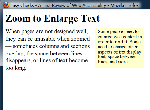 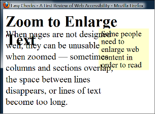
Fig. 14예가 보여주는 것은 텍스트 크기가 증가되는 경우, 제목이 본문 텍스트와 겹치고, 본문 텍스트가 사이드바 텍스트와 겹치고, 사이드바 텍스트가 바닥이 잘리는 것입니다.
Fig. 14Example showing that when text size is increased, the heading overlaps the main text, the main text overlaps the sidebar text, and the sidebar text is cut off at the bottom.
종종 텍스트 영역에 대해 자동으로 텍스트에 맞게 크기를 조정하고, 사용자에 대해 텍스트 영역의 크기를 변경할 수 있게 하는 것이 최선입니다.
영역들이 모든 콘텐트를 수용하도록 크기가 변경될 수 없는 경우, 일반적으로 스크롤바가 사용될 수 있어야 합니다.
또한 한 방향 스크롤링을 위한 재포장 섹션을 참고하세요.
Often it is best for text areas to automatically resize to fit the text, and for users to be able to change the size of text areas. When the areas cannot be resized to accommodate all content, usually a scrollbar should be available. See also the Rewrap for one direction scrolling section.
사람들이 큰 폰트나 낮은 스크린 해상도를 사용하는 경우, 대화 상자가 뷰포트 내에 없는 정보를 포함하는 것은 드문 일이 아닙니다.
그러한 경우, 보통 대화 상자에 대해 스크롤 바가 제공되는 것이 가장 좋은 사례입니다.
When people use large fonts or lower screen resolution, it is not uncommon for dialog boxes to include information that is not in the viewport. In such cases, it is usually best practice for scrollbars to be provided for the dialog box.
[초안 메모: 추가될 가능성이 있는 삽화: 대화 상자 잘림 예]
[Draft Note: Possible figure to be added: example dialog box cut off]
사용자가 인터페이스 내에 있는 경우, 스크롤바는 일반적으로 통신의 추가적인 이득을 제공합니다.
Scrollbars generally provide the additional benefit of communicating where the user is in an interface.
어떤 사용자는 그들의 운영체제에서 또는 화면 확대 소프트웨어로 마우스 포인터의 크기를 증가시킵니다.
이것 들은 툴팁 텍스트를 보기 어렵게 하지 않아야 합니다.
Some users increase the size of mouse pointers in their operating system or with screen magnification software. These should not obscure tooltip text.
[초안 노트: 추가될 가능성이 있는 삽화: 호버 핸드가 중요한 툴팁 텍스트를 보기 어렵게 함]
[Draft Note: Possible figure to be added: hover hand obscures important tooltip text]
사용자 요구 - 모든 요소들:
사용자는 사용자가 텍스트 크기 같은 디스플레이 설정을 변경한 경우를 포함하여 사용자가 보는 것을 위해 의도된 모든 인터페이스 요소들을 볼 수 있습니다.
Users can see all interface elements that are intended for users to see, including when users have changed display settings such as text size.
3.7.2 인쇄 사용자 정의 텍스트
어떤 사람들에게는 컴퓨터에서 텍스트를 읽는 것이 어렵습니다; 그들은 그것을 읽기 위해 종이에 전자 텍스트를 인쇄 할 수 있어야 합니다.
예를 들어:
It is difficult for some people to read text on the computer; they need to be able to print electronic text on paper in order to read it. For example:
어떤 사람들에게 컴퓨터 모니터에서 읽기 위해 필요한 물리적 위치에 있는 것이 불편하거나 통증을 수반합니다. 예를 들어, 어떤 저시력자들은 화면에서 1인치 떨어져야 합니다.
어떤 사람들은 모바일 기기를 가지고 있는 반면, 다른 누군가는 옮기기 어려운 모니터만을 가지고 있거나, 공용 단말기를 사용합니다.
어떤 사람들은 인쇄하여 주위의 텍스트를 차단할 수 있습니다; 예를 들어, 그들은 읽고 있는 곳 아래 라인을 가리기 위해 읽을 때 종이 한장을 밀어 넣습니다.
어떤 사람들은 색 오버레이가 필요합니다.
때때로 사람들은 컴퓨터로부터 떨어져서 사용하기 위해 인쇄해야 합니다. 예를 들어, 프리젠테이션 노트, 레서피, 수리 지침.
It is uncomfortable or painful for some people to be in the physical position required for reading on a computer monitor, for example, some people with low vision need to be an inch away from the display. While some people have mobile devices, others have only a monitor that is difficult to move, or use a public terminal.
Some people print so they can block out surrounding text; for example, they slide a sheet of paper down as they read to cover up the line below where they are reading. Some people need colored overlays.
Sometimes people need to print text to use it away from the computer, for example, presentation notes, recipes, and repair instructions.
사용자 요구 - 인쇄:
사용자는 텍스트가 표현되는 방법을 지정한 이후 콘텐트를 인쇄할 수 있습니다.
Users can print content after customizing how the text is displayed.
3.7.3 사용자 설정 사용
대부분의 운영체제는 사용자가 설정하는 것을 허용합니다 ... [초안 메모: 태스크 포스는 여기에 추가적인 정보를 추가할 계획이 있습니다.]
Most operating systems allow users to set ... [Draft Note: The Task Force plans to add additional information here.]
대부분의 브라우저는 사용자가 설정하는 것을 허용합니다 ... [초안 메모: 태스크 포스는 여기에 추가적인 정보를 추가할 계획이 있습니다.]
Most browsers allow users to set ... [Draft Note: The Task Force plans to add additional information here.]
사용자 요구 - 사용자 설정:
콘텐트는 다음과 같은 모든 관련 사용자 설정을 선택합니다 ... [초안 메모: 태스크 포스는 여기에 추가적인 정보를 추가할 계획이 있습니다.]
Content picks up all relevant user settings, such as ... [Draft Note: The Task Force plans to add additional information here.]
A. 감사의 말
저시력 태스트 포스
문서 개발:
Document development:
Task Force Facilitators: Jim Allan, Andrew Kirkpatrick
W3C Staff Contacts: Michael Cooper, Shawn Lawton Henry
Editor: Shawn Lawton Henry
Content drafters: Jim Allan, Laura Carlson, Wayne Dick, Shawn Lawton Henry, Andrew Kirkpatrick
Code editors: Michael Cooper, Andrew Kirkpatrick
태스트 포스 퍼실리테이터: Jim Allan, Andrew Kirkpatrick
W3C 스태프 연락: Michael Cooper, Shawn Lawton Henry
편집자: Shawn Lawton Henry
콘텐트 초안 작성자: Jim Allan, Laura Carlson, Wayne Dick, Shawn Lawton Henry, Andrew Kirkpatrick
코드 편집자: Michael Cooper, Andrew Kirkpatrick
태스크 포스 기여자:
Task Force contributors:
Jim Allan
Jonathan Avila (SSB BART Group)
Bruce Bailey
Laura Carlson
Srinivasu Chakravarthula (Deque Systems, Inc.)
Wayne Dick (Knowbility, Inc)
Katie Haritos-Shea (Knowbility, Inc)
Shawn Lawton Henry
Andrew Kirkpatrick (Adobe Systems Inc.)
Erich Manser (IBM Corporation)
John Rochford
Alan Smith
Jeanne Spellman
자금 제공자 조성
이 발행물은 계약 HHSP23301500054 하에 미국 보건 사회 복지부, 국립장애자립생활재활연구소(NIDILRR)로부터 연방 기금의 일부에서 지원을 받고 있습니다.
이 발행물의 콘텐트는 필연적으로 미국 보건 사회 복지부의 견해나 공식 정책을 반영하지 않고, 상품명, 상용 제품, 기관의 언급이 미국 정부에 의해 지지를 받는 것도 아닙니다.
This publication has been funded in part with Federal funds from the U.S. Department of Health and Human Services, National Institute on Disability Independent Living and Rehabilitation Research (NIDILRR) under contract HHSP23301500054. The content of this publication does not necessarily reflect the views or official policies of the U.S. Department of Health and Human Services, nor does mention of trade names, commercial products, or organizations imply endorsement by the U.S. Government.